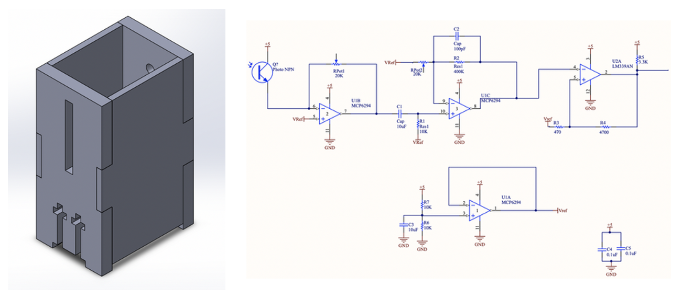
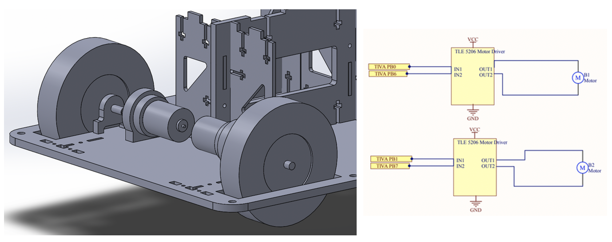
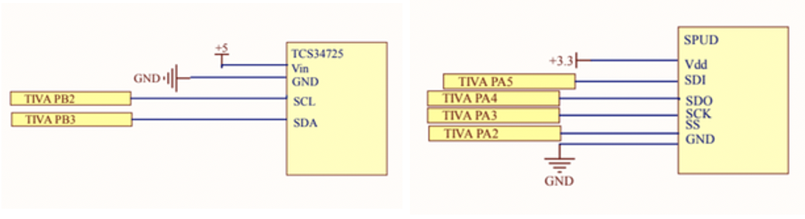
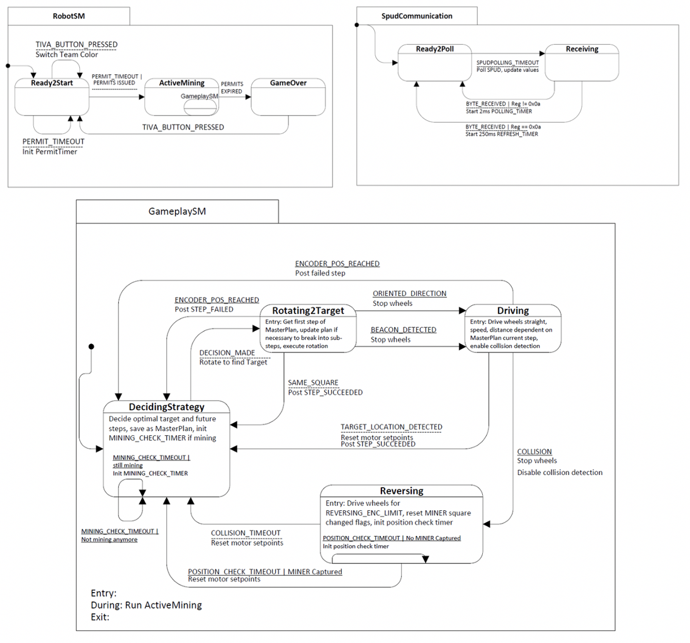

ME218B: Smart Product Design Applications
The objective of the project was to design and build an autonomous mobile robot that collects MINERs and place them in requested area of the field to “mine” minerals. Following writeup summarizes briefly the main modules of the robot, more details of the project can be found in the following dedicated page.
The MINERs carry an IR beacon which will emit IR in a full circle at a unique frequency. They detect what region of the field they are in and relay this information to the robot. The field is approximately 2.5 x 2.5m area with divided into 16 equal-sized regions of different color, and is tilted by approximately 3° such that the north edge is approximately 15cm higher than the south edge.

MINER detection
To detect MINERs, we used a phototransistor. To prevent the phototransistor from detecting MINERs that were not directly in front of our TRACTOR, thus causing misalignment, we built an enclosure with a slit to ensure that the phototransistor only sampled IR light from a single plane in front of the TRACTOR. Meanwhile, IR Sensor circuit was used to detect IR emissions from the MINERs. We used two potentiometers on the two different gain stages of the IR detection circuit so that we can adjust the gain levels on field without having to rebuild the circuit. This proved to be very useful as we were able to adjust different sets of gains while testing with MINERs on the field. Capacitors were used throughout the power and ground to reduce noise. This circuit resulted in a consistent rising edge timing, with the duty cycle of the signal dependent upon our distance from the MINER.
Driving Module
 To drive our wheels, we attached the provided gear-motors to a drive shaft with a clamping shaft coupling. The shaft was singly supported with a flange bearing on the interior side of the wheel to prevent damage to the motors and shaft bending. Encoders were mounted directly on the back of the motor by using a 3D printed mount with M2 screws directly screwed into the motor. The TLE 5206 driver was selected to control our two motors connected to each wheels. Two TIVA pins were used to control each of the motor drivers -- one pin was used for a digital output set depending on direction of rotation while the second pin was connected to PWM signal from the TIVA to control the speed of the motor.Positioning and Communication
To detect our relative location in the field, we used TCS34725 Color sensor. The sensor was mounted on the bottom of the robot and calibrated on the field to provide optimized readings. SPUD was used to communicate about the status of the mining operations. It communicated with our robot over a 4-wire SPI bus, and was able to be recognized by and communicate wirelessly.
Software
Our software was set up with two upper level state machines and a single lower-level state machine, with interrupt-driven services handling motor control.
